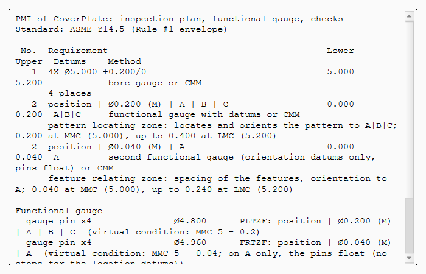

Tutorial AA: Composite position, evaluated from CMM data
| Books |
Cogorno, Geometric Dimensioning and Tolerancing for Mechanical Design, ch. 12 (composite position) and ch. 13 (graphic analysis); Drake, Dimensioning and Tolerancing Handbook, ch. 5 |
| Standards |
ASME Y14.5 (composite position tolerancing) |
| You learn |
Frame Style Composite Frame, PLTZF and FRTZF, the gauges of a composite frame, Analysis › Position Evaluation |
| Sizes |
A plate 80 × 80 × 10 with four holes Ø5 +0.2/0 on a 40 mm square, 20 mm from datums B and C |
A cover plate is bolted on with four screws, and the plate’s holes must line up with the tapped holes underneath. The pattern may sit 0.2 mm off where datums B and C put it. The holes must stay within 0.04 mm of each other, square to A, because the screws go into a matching pattern. One composite frame says both things.
The hole layout is that of Cogorno’s graphic analysis example (ch. 13), converted to millimetres. The measured data are ours.
Step by step
1. The plate, its datums and its holes
The plate is made by script. Its datums are A (underside), B (left) and C (front), and its holes are dimensioned 4X Ø5 +0.2/0, all on the four hole faces. The part’s standard is ASME Y14.5.
2. The composite frame
Select the four hole faces, then PMI › Feature Control Frame:
-
Position, Ø ticked,
0.2, MMC, datumsABC; -
Frame Style Composite Frame, lower row
0.04, MMC, datumA.

The label is a two-row frame with one position symbol: position | Ø0.200 (M) | A | B | C / Ø0.040 (M) | A.
3. The inspection plan
PMI › Inspection Plan lists each row as its own characteristic:
-
PLTZF: Ø0.2 at MMC, up to Ø0.4 at LMC, which locates and orients the pattern to A|B|C;
-
FRTZF: Ø0.04 at MMC, up to Ø0.24 at LMC, which holds the spacing and the orientation to A.
The functional gauge has two gauges. The first has pins of Ø4.8 on A, B and C. The second has pins of Ø4.96 that float on A, with no stops for B and C.

4. The rule on the lower row’s datums
Set the frame’s LowerDatumReferences to B in the property view: the plan’s check reports an error.
A composite lower row may only repeat the upper row’s datums, in their order. They orient the row and never locate it.
Then set it back to A.
5. Position Evaluation
Select the frame, then Analysis › Position Evaluation. The table lists the true positions from B and from C, read from the model. Type the CMM’s results into the table:
| Hole | From B | From C | Size |
|---|---|---|---|
1 |
19.94 |
20.06 |
5.12 |
2 |
20.08 |
60.08 |
5.16 |
3 |
60.12 |
59.96 |
5.20 |
4 |
60.04 |
19.96 |
5.08 |
The result is ACCEPT.
-
Each hole’s bonus is its size less 5.0. With it, the pattern-locating zones are 63 % used.
-
The feature-relating zones may slide and turn on A. Fitted to the holes, they are 72 % used.

The replay
| # | In the book (NX) | In FreeCAD NX-Style | Result | Notes |
|---|---|---|---|---|
AA1 |
The cover plate: four holes 4X Ø5 +0.2/0 on a 40 mm square; datums A (underside), B (left), C (front); ASME Y14.5 |
modelled by script, the datums and the size made as in tutorial T |
differs |
datum feature A; datum feature B; datum feature C; 4X Ø5.000 +0.200/0 |
AA2 |
Feature Control Frame, Frame Style Composite: the pattern Ø0.2 (M) to A|B|C, the holes to each other Ø0.04 (M) oriented to A |
4 face(s) selected + ribbon 'PMI › Annotation > Feature Control Frame'; Position, Ø ticked, 0.2, MMC, A B C; Frame Style Composite Frame, lower row 0.04, MMC, datum A; MB2 = OK |
same |
position | Ø0.200 (M) | A | B | C / Ø0.040 (M) | A |
AA3 |
Inspection Plan: one row per segment, one functional gauge per row |
ribbon 'PMI › Inspection > Inspection Plan' |
differs |
PLTZF Ø0.2 at MMC up to Ø0.4 at LMC, gauge pins Ø4.8 on A|B|C; FRTZF Ø0.04 up to Ø0.24, gauge pins Ø4.96 that float on A (Cogorno ch. 13: a composite frame takes two gauges). NX lists the frame; the plan and the gauges are NXStyle’s |
AA4 |
A composite lower row may only repeat the upper row’s datums, in order |
the frame’s LowerDatumReferences set to B in the property view; Inspection Plan; set back to A |
differs |
the check reports B as an error: the lower row orients to the datums it repeats, starting with the primary (Cogorno ch. 12, Drake ch. 5) |
AA5 |
Analysis > Position Evaluation: the measured holes against both rows |
the frame selected + ribbon 'Analysis › Tolerance > Position Evaluation'; the CMM’s 12 values typed into the table; MB2 = OK |
differs |
ACCEPT: the pattern-locating zones (with each hole’s bonus) 63 % used; the feature-relating zones, moved and turned to fit, 72 % used. The paper gauge of Cogorno ch. 13 done numerically: a minimax fit. NX has no evaluation of measured data (that is a CMM program’s job) |
AA6 |
The same holes if the lower row could not turn (as if it repeated A|B) |
the evaluation double-clicked, Lower row zones 'Translate only', MB2 = OK |
differs |
REJECT: 103 % of the feature-relating zones. The datums a composite lower row repeats decide how its zones may move, and so whether the part passes |
AA7 |
The cover plate with its composite frame |
render of the graphics window |
same |
6.8% of the view shows the part |
| Result | Means |
|---|---|
same |
The book’s NX steps work as written. |
differs |
It works, but the FreeCAD way is different; the notes say how. |
limit |
The book’s way fails in FreeCAD itself; a workaround follows in the next steps. |
missing |
FreeCAD has no such function; a stand-in follows. |
skipped |
Not replayed; the notes give the reason. |
FAILED |
Did not work. |
What differs from NX
-
NX’s Feature Control Frame has a composite frame style as well. NX-Style also checks the lower row’s datums.
-
NX states the requirement but does not evaluate measured data; CMM software does that. Position Evaluation is NX-Style’s.
-
STEP AP242 receives the two rows as two position tolerances, because OpenCASCADE cannot link them.